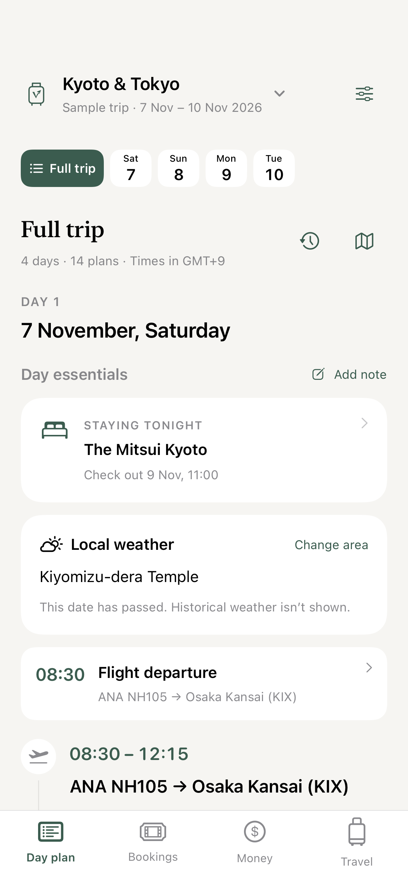
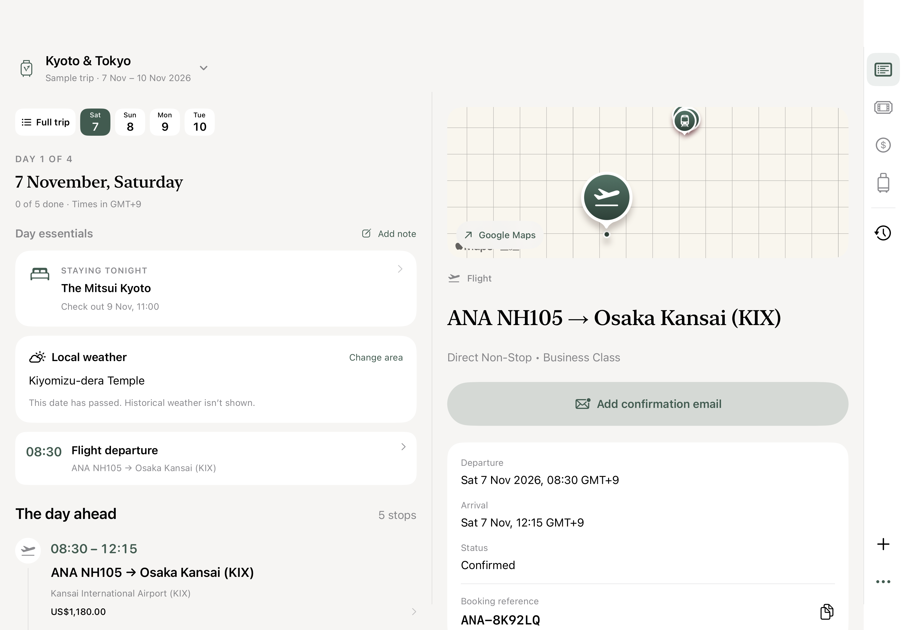

Connect Gmail (optional)
Sign in directly with Google using read-only permission, or paste confirmation text without connecting any account.
Know what’s next, where you’re staying and how to get there. vTrip brings your daily plans, booking confirmations, expenses and private iCloud backup together so you can get on with the trip.
Free on iOS · No ads · No tracking · No vTrip server account.

Start with today’s plans and your hotel for tonight. Switch to Full trip to scroll through every day, from the first flight to the journey home.

Confirmation emails should help you travel, not create more organizing. Connect one or more Gmail accounts or paste confirmations manually, review detected bookings, and add only what you approve.
Sign in directly with Google using read-only permission, or paste confirmation text without connecting any account.
Dates, local times, prices and original confirmation text are parsed on your iPhone and grouped by country and booking type.
Multiple emails for one reservation combine automatically while preserving every original email version for offline viewing.
vTrip does not run user accounts, ad networks, behavioral analytics, or a backend server that reads your email or stores your trips. Optional Gmail access connects directly from your device to Google, and optional iCloud Backup stores data strictly inside your personal Apple iCloud Private Database.
Read the full privacy policyOpen any booking’s saved confirmation email full-screen with its booking reference clearly highlighted. Open the original message in Apple Mail with one tap, or paste confirmations for manually entered bookings.
Track booking costs and everyday travel expenses in local and home currencies with locked reference exchange rates and simple companion cost splitting.
Need help setting up Gmail, opening original emails in Apple Mail, or restoring from iCloud Private Backup? Visit the support guide or email us directly.